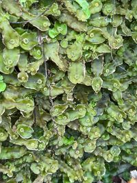

Dumortieraceae
Dumortier's Liverwort / Water Velvet
Dumortieraceae is a monotypic family (containing only Dumortiera hirsuta) in the order Marchantiales. It is characterized by its very large, dark green, velvety thallus that appears to lack the surface pores and air chambers typical of most complex thalloid liverworts, an adaptation to its constantly wet, shaded habitats.
Overview
The Dumortieraceae family comprises a single genus, Dumortiera, with one widespread and variable species, Dumortiera hirsuta (though sometimes further divided). This is one of the largest thalloid liverworts, forming extensive, dark green, often velvety mats in extremely moist and shaded environments. Its most striking feature is the apparent absence of the dorsal air pores and underlying air chambers that characterize most other families in the Marchantiales; the thallus surface appears smooth and solid.
Dumortiera hirsuta is found globally in temperate and tropical regions where suitable habitats exist – typically on perpetually wet rocks, soil banks, or concrete structures directly adjacent to or within streams, waterfalls, springs, and seeps. The reduction or loss of the air chamber system is thought to be a secondary adaptation to these hyper-humid conditions where external gas exchange is less constrained.
Plants are usually monoicous, bearing sessile male receptacles (antheridial pads) and shortly stalked female receptacles (archegoniophores) with disc-like heads on the same thallus. Asexual reproduction by specialized gemmae does not occur.
Quick Facts
- Scientific Name: Dumortieraceae
- Common Name: Dumortier's Liverwort, Water Velvet
- Number of Genera: 1 (Dumortiera)
- Number of Species: 1 (D. hirsuta - variable, sometimes subdivided)
- Distribution: Widespread globally in humid temperate and tropical regions; requires constantly wet, shaded habitats (rocks/soil by streams, waterfalls, seeps).
- Evolutionary Group: Bryophytes - Liverworts (Marchantiophyta) - Class Marchantiopsida - Order Marchantiales
Key Characteristics
Growth Form and Habit
Plants form very large, prostrate, dichotomously branching thalloid gametophytes, often exceeding 2 cm in width and many centimeters long, creating extensive dark green to blackish-green mats with a velvety texture.
Thallus Structure
The thallus is relatively thin but wide and robust. The most distinctive feature is the dorsal surface, which appears smooth and solid, lacking the obvious air pores and hexagonal surface pattern seen in most other Marchantiales. While vestigial pores and reduced air chambers exist internally, they are not apparent externally. The thallus margins and apex are often noticeably hirsute (hairy) due to projecting cell walls or papillae. The ventral surface bears rhizoids and small, often ephemeral or inconspicuous ventral scales. The thallus generally lacks a strong aromatic scent.
Reproductive Structures
Plants are typically monoicous, but antheridia and archegonia often mature at different times or on different branches, sometimes appearing dioicous. Antheridia (male organs) are grouped within distinct, sessile, often irregular or crescent-shaped dorsal pads/receptacles. Archegonia (female organs) are borne on specialized archegoniophores, which have a relatively short, often hairy stalk and a terminal, flat or slightly convex, disc-like head (capitulum) with 6-10 short marginal rays or lobes. Archegonia and subsequent sporophytes develop on the underside of the head. Asexual reproduction via specialized gemmae is absent.
Sporophyte and Spores
Sporophytes develop on the underside of the archegoniophore head. Each consists of a foot, a short seta, and a dark, spherical capsule. The capsule wall is unistratose and dehisces irregularly or by 4(-6) valves. Functional elaters with 2-4 spiral thickenings are present among the spores. Spores are relatively small and released singly.
Chemical Characteristics
While not known for strong volatile aromatics like Conocephalum, Dumortiera likely possesses various phenolic compounds and other metabolites common in liverworts. Its primary adaptations are morphological and ecological, related to its wet habitat.
Field Identification
Dumortiera hirsuta is usually identified by its large size, habitat, and the unique appearance of its thallus surface:
Primary Identification Features
- Large, dark green, velvety thallus: Often forms extensive mats.
- Apparent lack of surface pores/pattern: Dorsal surface looks smooth and solid, unlike the patterned surface of Conocephalum or Marchantia.
- Hirsute margins/apex: Thallus edges and growing points often appear hairy (use hand lens).
- Habitat: Found in extremely wet, shaded locations like rocks in streams, waterfall splash zones, or constantly dripping seeps.
- Disc-like archegoniophore head: Female receptacle is flat or slightly convex with short rays.
- Sessile antheridial pads: Male receptacles are distinct patches on the thallus surface.
Secondary Identification Features
- Monoicous condition common.
- Inconspicuous ventral scales.
- Absence of gemma cups.
Seasonal Identification Tips
- Gametophyte: Perennial and typically visible year-round in its permanently wet habitats.
- Reproductive Structures: Develop seasonally, often in spring or summer. The thallus characteristics are usually sufficient for identification even when sterile.
Common Confusion Points
- Conocephalum conicum: Distinguished by its distinct hexagonal surface pattern, strong scent, and cone-shaped archegoniophores. Usually found in slightly less wet conditions.
- Marchantia species: Distinguished by conspicuous barrel-shaped pores, often gemma cups, and different receptacle shapes (umbrella-like archegoniophores).
- Pellia species (Simple thalloid): Lack the velvety texture, hirsute margins, specific reproductive receptacles, and internal complexity (even if reduced) of Dumortiera. Pellia often grows in similar wet habitats but looks different (more translucent, smoother edges).
- Large aquatic mosses: Have distinct leafy structures, not a flattened thallus.
Field Guide Quick Reference
Look For:
- Very large, dark, velvety thallus
- Smooth dorsal surface (no obvious pores/pattern)
- Hairy margins/apex
- Flat/disc-like female receptacle head (short stalk)
- Sessile male pads
- Habitat: Extremely wet shade (streams, seeps)
Key Distinctions:
- Lack of surface pattern distinguishes from Conocephalum / Marchantia.
- Velvety texture and specific receptacles distinguish from Pellia.
- Habitat is highly indicative.
Notable Examples
The family Dumortieraceae contains only one widespread and variable species:

Dumortiera hirsuta
Dumortier's Liverwort, Water Velvet
The sole representative of its family. This very large liverwort forms dark green, velvety mats in constantly wet, shaded habitats worldwide. It is recognized by its thallus surface appearing smooth (lacking obvious pores/chambers), hirsute margins, and its reproductive structures (sessile male pads, short-stalked female receptacles with disc-like heads). Its morphology represents a secondary simplification within the Marchantiales.
Phylogeny and Classification
Dumortieraceae represents a distinct lineage within the order Marchantiales. Molecular studies confirm its placement within this order, related to other complex thalloid families. Its most striking evolutionary feature is the secondary reduction or loss of the conspicuous air pores and chambers that characterize most Marchantiales.
This morphological simplification is interpreted as an adaptation to its hyper-humid environment, where the need for internal air spaces for gas exchange is reduced due to the constantly moist surface. Despite the simplified thallus surface, it retains other features of the order, such as specialized reproductive receptacles and elaters. Studying Dumortieraceae provides valuable insights into morphological adaptation and evolutionary reduction within land plants.
Position in Plant Phylogeny
- Kingdom: Plantae
- Clade: Embryophytes (Land plants)
- Division: Marchantiophyta (Liverworts)
- Class: Marchantiopsida
- Order: Marchantiales
- Family: Dumortieraceae
Evolutionary Significance
Dumortieraceae is evolutionarily significant due to:
- Secondary Simplification: Demonstrates the evolutionary loss or reduction of complex features (air pores/chambers) likely in response to environmental conditions.
- Adaptation to Hyper-humid Habitats: Represents a successful specialization for constantly wet environments within the Marchantiales.
- Phylogenetic Context: Helps understand the range of morphological variation and adaptation within the complex thalloid liverworts.
- Morphological Plasticity: The degree of pore/chamber expression can sometimes vary with environmental moisture, offering insights into developmental plasticity.